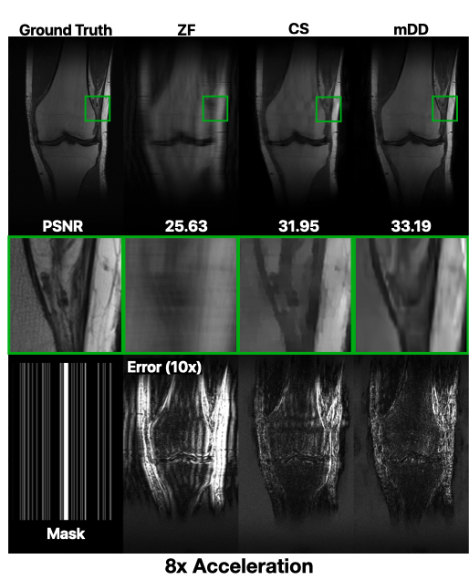

My name is Sukrit Arora and I am currently in the 5th Year Master's program for Electrical Engineering and Computer Science at UC Berkeley. I recived my Bachelor's of Science in EECS from UC Berkeley in May 2020.
My interests lie in the intersection of signal processing, optimization, and machine (deep) learning. My research is in the field of computational medical imaging (MRI).
UC Berkeley Research, Computational Medical Imaging
I am a graduate student researcher in Michael (Miki) Lustig's research group. My research is on computational medical imaging, specifically on the viability of cutting-edge computer vision/computational imaging algorithms for medical data.
Currently, my interest is in self-superivised, single shot learning. I have been working on a deep decoder generative network (mDD) for image denoising and subsampled MR image reconstruction that would enable faster scan times. You can read more about the project here, find the code here, and read about how my research has been used and cited here.

Modified Deep Decoder Reconstruction results for 8x sub-sampled knee data
My previous research in this group related to stitching volumetric MR images in order to minimize overlap artifacts. This was done by searching over a family of functions that would minimze the total variation of the stitched image. You can see an example result below.
I have been a uGSI for EE16B (Designing Information Devices and Systems II), CS61C (Computer Architecture), EE120 (Signals and Systems), and EECS127 (Linear Algebra and Optimization Models).
For all classes, I taught either a lab or discussion of 25-50 students, held my own office hours, and proctored and graded exams.
For EECS127, I was in charge of the homework content (creation, consolidation, and release). I also created jupyter notebook labs with an emphasis on imaging related applications (compression, pose estimation, restoration).
EECS127 Labs: Examples from Imaging assignments
For EE120, I also created new, application-based jupyter notebook labs related to stock price tracking and communication systems.
EE120 Labs: Stock Price Tracking (Above), Basis Functions for Communication (Below)
Apple Inc., Product Security Intern
During my summer at Apple, I worked on two seperate projects. In both, my work entailed applying software engineering principles in a cybersecurity context. All my work is under an NDA, but I have a brief description of both projects below.
My first project was a solo project, in which I created a Command Line Interface in order to perform complex queries on a distributed graph database.
My second project was a group project, where I designed and implemented a server automation workflow. My responsibilities specifcally were related to backend scripts and server orchestration.
Relevant Coursework and Skills
Languages
Python, C, Verilog, Matlab, R, Java, SQL, Swift (iOS), HTML, and CSS
Classes
Technical
Computer Vision | Statistical Learning Theory | Statistical Signal Processing | Low Dimensional Models for High Dimensional Data | Machine Learning | Opimization Models | Digital Image Processing | Digital Signal Processing | Probability Theory | Algorithms | Information Theory | Embedded Systems | Digital Design (FPGA) | Control Systems | Robotics | Networks
Non-Technical
Astronomy | Economics | Digital Music Synthesis | Music in American Cultures | Game Theory
Projects
Learned Low Dimensional Image Representations for Facial Recognition
Proposed a modification of the dictionary-based Sparse Representation-based Classification (SRC) facial recognition algorithm using different low dimensional representations of input images. The methods of low dimensional representation proposed included: naive decimation, filtered downsampling, Haar Wavelet downsampling, Principle Component Analysis, and a learned Convolutional Autoencoder.
Analyzed UC Berkeley enrollment data from several perspectives: Built a variety of both binary classifiers and regression models to predict the location of a school and admitted white male proportion, respectively, given multiple gender and ethnic features. Additionally, interpreted enrollment data from a Fairness in ML perspective.
Computational Photography
Face Morphing Project shown
Several projects, click on each link below for more in depth:
Made a RISC-V 60 MHz CPU with a 3-stage pipeline that accounts for data and control hazards. The CPU is also connected to a user I/O interface and synthesizer using memory mapped I/O. The synthesizer is a monophonic subtractive synthesizer that is constructed using a numerically controlled oscillator and is capable of producing four types of tones (sinusoidal, sawtooth, square, and triangular).
Localization and Unpredictable Surveillance with Drones
Made a Crazyflie drone improviser randomly navigate between three waypoints while avoiding a Kobuki turtlebot adversary. Control logic dictated by Reactive Control Improvisation algorithm, which creates an FSM using specified LTL constraints. Localization done using Optitrack Motion Capture, and orchestration done via ROS.
Image Object Removal
Constructed a deep learning pipeline for automatic image object removal. This was done by combining the Mask R-CNN network, which does object recognition, with a Generative Image Inpainting network, which uses a multiscale contextual GAN to inpaint specified regions.
Radio Modem and Image Compression Algorithm
3rd in Class
Transmitted an image across the room using a radio and custom image compression scheme. For transmission, we implemented our own Audio Frequency Shift Keying (AFSK) modem that would modulate and demodulate the compressed data to and from the radio, respectively. For the image compression, we impelemented our own variant of JPEG image compression from the ground up, that used a combination of color channel tranformation, a Haar wavelet transform, quantization, and LZW lossless compression.
Self-Inverting Pendulum
Created a self-inverting pendulum by combining a LQR Controller with a Leunberger Observer for state estimation and Bang-Bang control for swing-up.
Computer-Generated Music Synthesis
Generated new music using a random walk on a Markov Chain. Transition probablilities of the Markov Chain were created by parsing and analyzing a variety of MIDI files of different genres.
Network Router and Optimizer
Implemented a network router simulator using distance-vector routing, a distributed routing algorithm. Additionally, built a Wide Area Network (WAN) optimizer, a middlebox that optimizes the amount of data transmitted over a wide area network to reduce excessive bandwidth costs.
Webcam Musical Instrument
Created a musical instrument in Max8 that generates music based on keyboard inputs and movements tracked via a webcam using a Canny Edge Detection filter for processing.
Food Analyzer
3rd Place, Hack UCSC
Food Analyzer is a Chrome extension that uses web scrapers, machine learning, and natural language processing to instantaneously obtain relevant nutritional information for recipes and ingredients seen online. It allows the user to identify unhealthy ingredients and make alternative decisions.
3rd Place, Robotics at Berkeley Dorm Ex Machina Competition
As a part of the Dorm Ex Machina Competition, we created a Automated Snack Delivery Robot. We CAD’ed and built the robot from the ground up with a $100 budget using a Raspberry Pi, OpenCV, Homemade Line Sensors, and a Motor Controller
Wallpaper Setter Script
Created a wallpaper setter in python that used Reddit APIs to get the latest landscape pictures from r/ EarthPorn and set them as my desktop background. Additionally, I wrote a plist script in order to automate image getting
MileStones
CalHacks 3.0
Created MileStones, a scavenger hunt web app that takes users from one location to the next based on user feedback, allowing them to discover and explore new places that match their taste. Used Yelp, Weather.com, and IBM Watson APIs and Flask Libraries to create a working prototype in only 36 hours time
Engineering Summer Academy at The University of Pennsylvania
1 st Place BattleBots Competition Winner
Competitive residential summer program at UPenn in Robotics
Founder of Food Watchers
Food Watchers is an iPhone application designed in partnership with Stanford’s Lucile Packard Hospital’s Pediatric Weight Management Program. It encourages healthy food
habits for obese participants in a simple and accessible way. It has been rolled out to current participants of the program and has over 1000 downloads in 5 different continents
SignedIn
HackingEDU Hackathon
Developed a beta version of a sign language to text converter. Developed on a LEAP motion with Python using LEAP motion API and a neural network machine learning algorithm to make hand recognition faster and more accurate